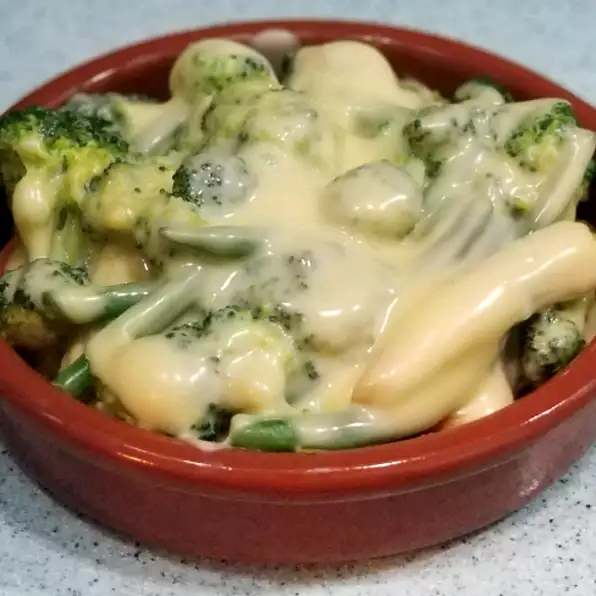

Tangy Broccoli

Cheesy broccoli with a kick!
This broccoli is sure to have your family, or guests, talking
INGREDIENTS
- 1 large head of broccoli, cut into florets
- 2 tablespoons prepared Dijon-style mustard
- 4 ounces proces cheese food
DIRECTIONS
- Steam broccoli until tender-crisp
- Toss broccoli with mustard, then melt cheese over the broccoli in a microwave for 1 minute. Stir and serve